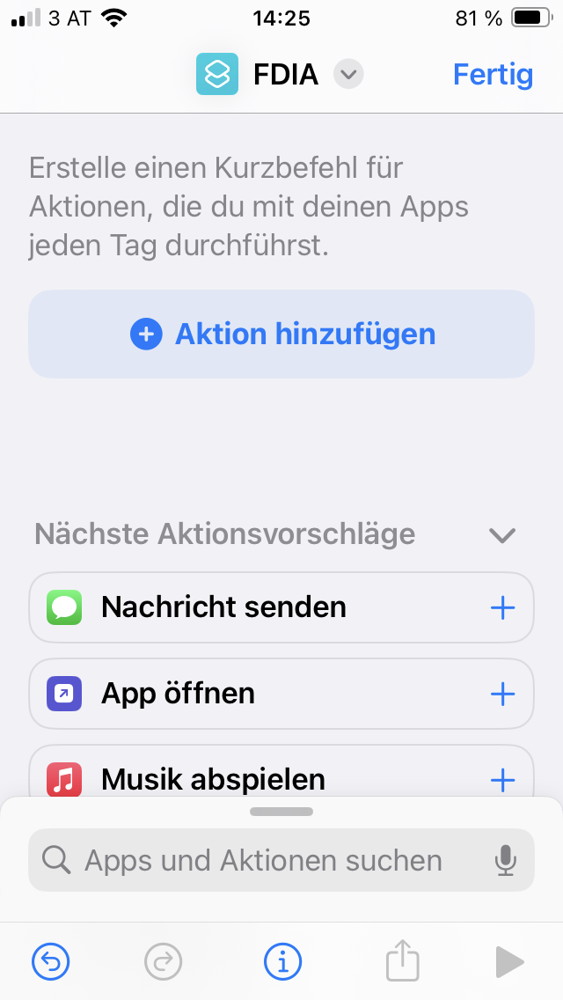
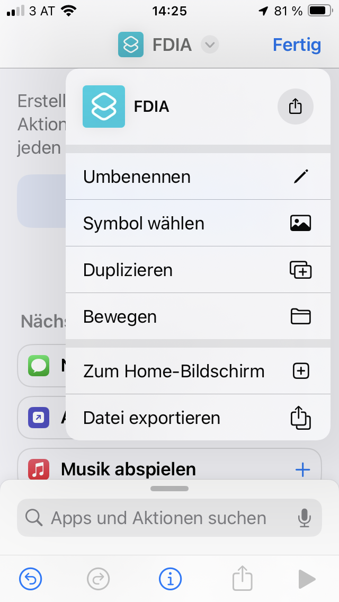
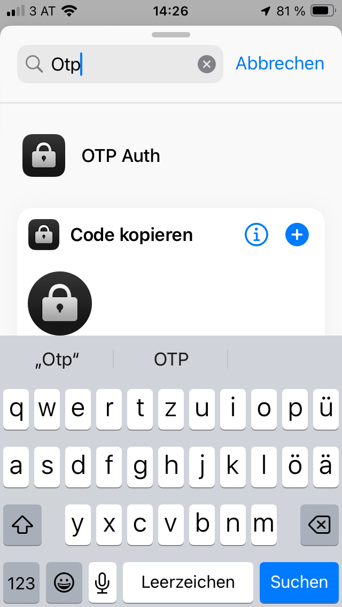
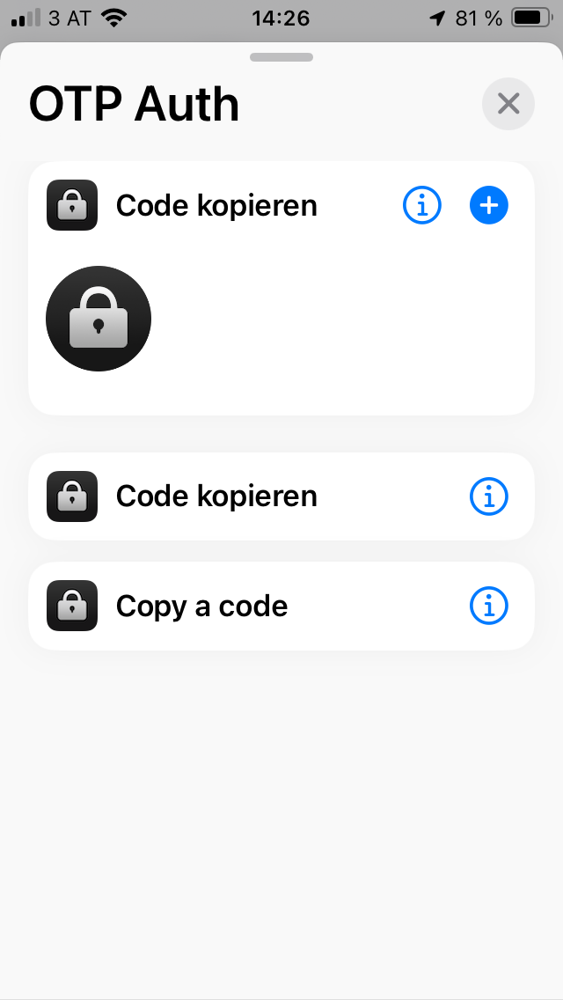
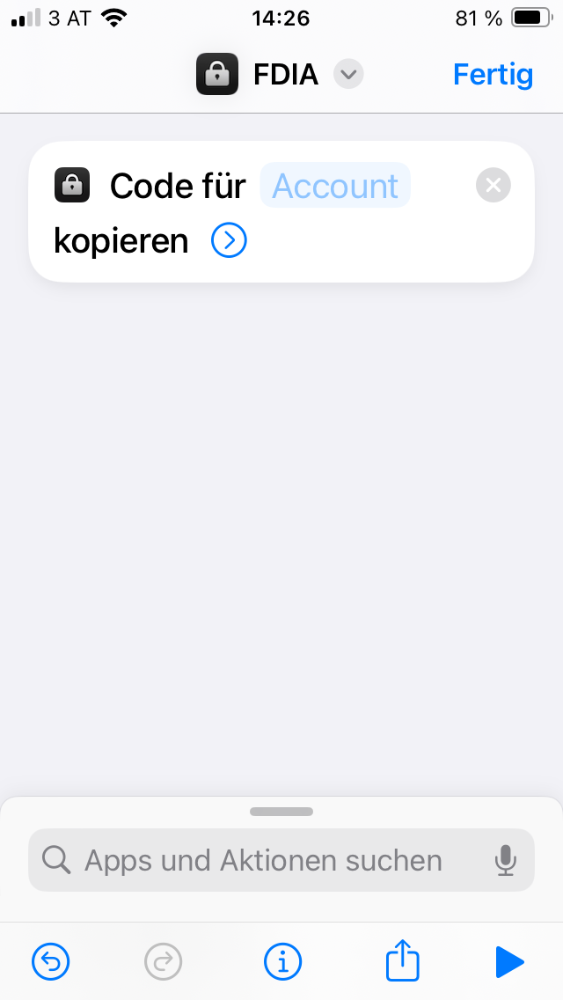
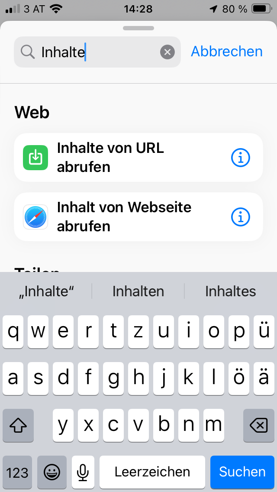
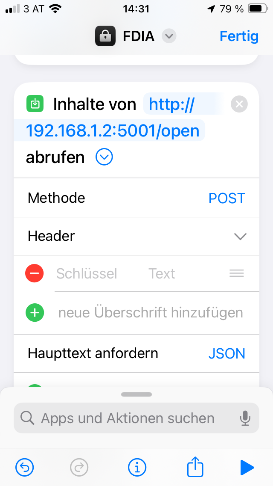
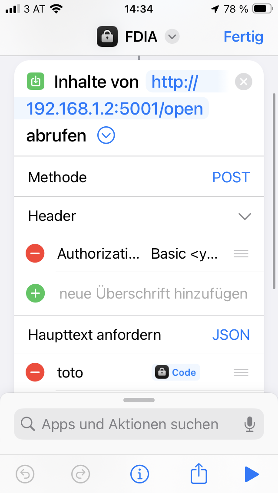
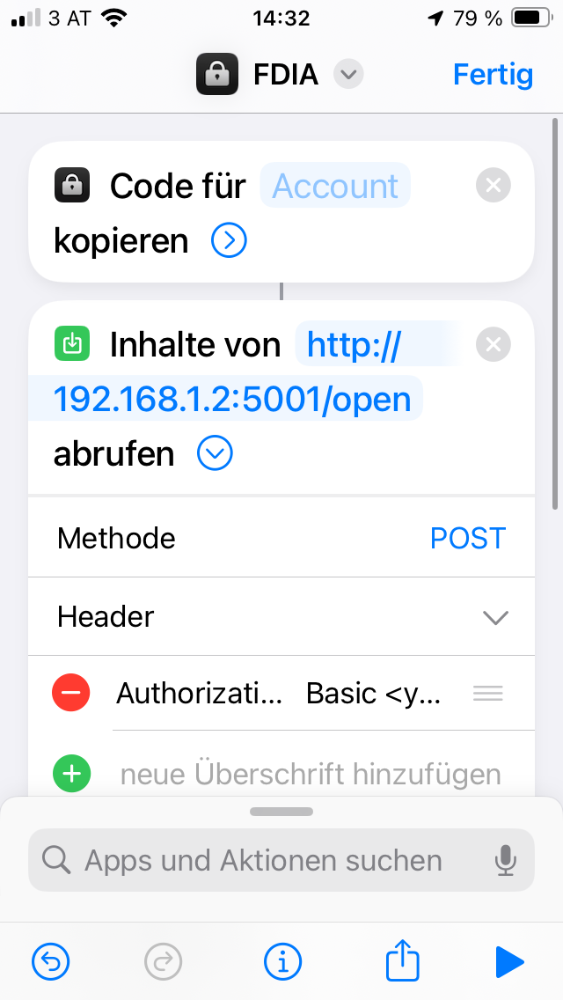
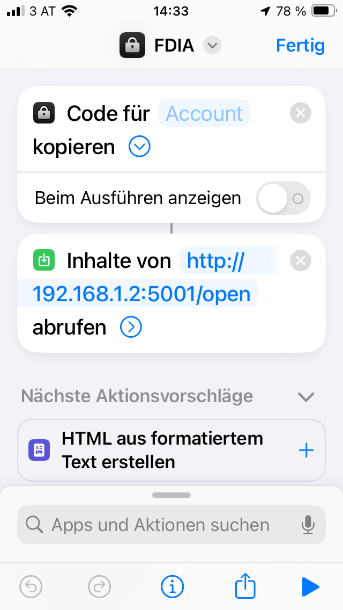

How to setup Apple IOS Shortcut App to open door via REST-API call
It is required that you have setup beforehand the OTP App on your mobile.
see How_to_setup_OTP_App_on_mobile_phone
Open on iPhone Apple Shortcut app.
Create or navigate to a folder of your choice.
Select
+to add a new shortcut
name/rename your new shortcut.
type in search
otpand selectcopy a code

 Now search another function in search bar
inhalte abrufenorrequest content
Insert:
your RPi URL / IP =
http://<RPi hostname or IP in your local wifi net>:<Port e.g. 5001>/openMethod: POST
Header = add Key -> KeyName =
AuthorizationValue =Basic <here your base64 encoded WebUsername:Password>Content
JSONAdd key =
totpand value =code> otp code from previous step. 


Finished. Try to run it.
